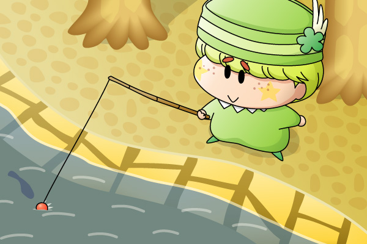

ペータ「今日もたくさん釣ってお金に換えるだべ！」
ニンテンドーDSの「おいでよ どうぶつの森」を買った記念に描いてみました。このゲームは自分で決めた名前の村でほのぼのとした生活を送るというシステムですが、妖精界ではペータがこれに近い生活を送っているのかなぁと勝手に想像。絵のように、ペータは一日中釣りをしてそうな気がします(^^)。
というか、どうもペータに対しては一人で遊ぶ姿を想像してしまいます。マンボはガビンと遊びそうだし、ビケーはアンナとべったり(?)だし、ミルモはなかなか妖精界へ行かないし…って考え過ぎですね(^^;。
今回の背景は実際のゲーム画面を見ながら描いてみたのですが、これは勉強になりますね。水を描くのにいつも苦戦する私ですが、水をいかにうまく表現するかということよりも、周りのもの（たとえば川岸など）をうまく描くことでそれっぽく見えるということが分かりました(^^)。
(2005/12/12)